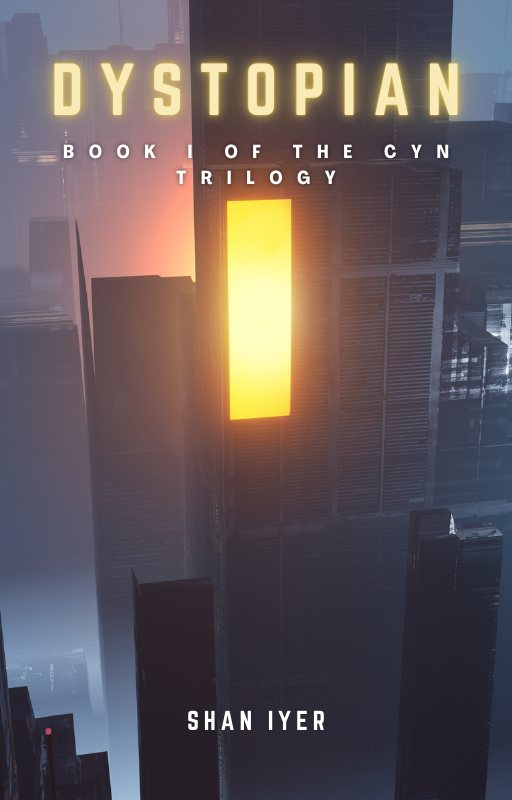
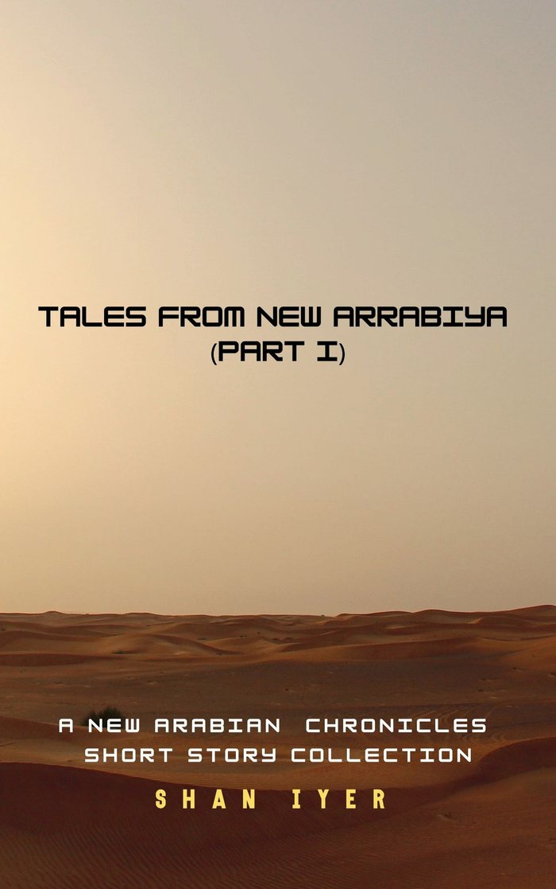
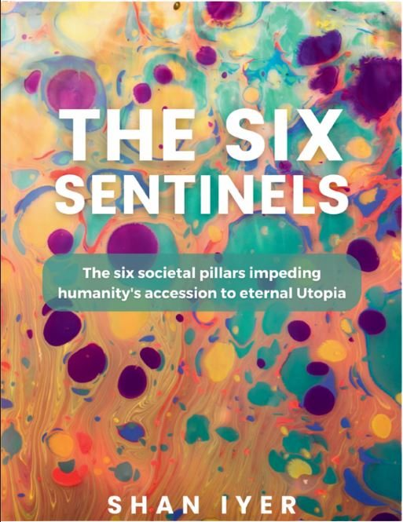

Dark speculative fiction

Dystopian
Book one of the Cyn trilogy. A fascist faction controls mainland America. A man has to decide: join the ruling elite among the Nation's top one per cent, or defect to the Dark Underground.


The Six Sentinels
Non-fiction. A deep critique of capitalism, the corporation, the failures of the state and the media's role in society.
Shan
Dark speculative fiction, fractured futures, political imagination, and stories about truth, power, memory and resistance.
I'm working on Sands and Sihr, a 143,000 word Arabian science fantasy, and pitching a non-fiction work, a revisionist theory of Marxism, to agents and publishers (from my June 2026 post).
Where I've set up a stall
Te Manawa book festival, North West Library, Massey, Auckland. Over 30 stalls for indie writers, publishers and comic artists.
More at shaniyer.com, and on Instagram, Substack and YouTube.